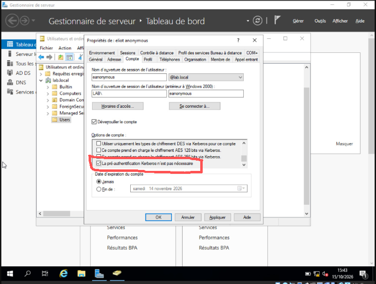
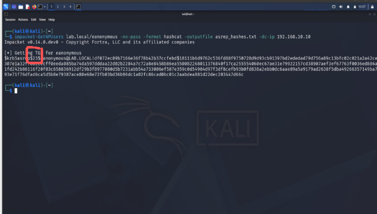

AS-REP Roasting
AS-REP Roasting est une technique d'attaque utilisée dans les environnements Windows Domain. Elle consiste à extraire les réponses AS-REP des comptes d'utilisateurs d'Active Directory et les déchiffrer pour obtenir les mots de passe en clair. Dans le même esprit que le Kerberoasting, cette technique permet à un attaquant d'obtenir les mots de passe en clair de comptes d'utilisateurs, ce qui peut lui donner un accès privilégié au système.
Pour effectuer un AS-REP Roasting, un attaquant doit d'abord obtenir une réponse AS-REP pour un compte d'utilisateur. Cela peut être fait en utilisant des outils tels que Mimikatz ou Rubeus ou encore Impacket ici utilisé. Une fois que l'attaquant a la réponse, il peut l'extraire et la déchiffrer pour obtenir le mot de passe en clair du compte d'utilisateur.
Simulation (HomeLab)
Dans le cadre de mon HomeLab, j'ai simulé un AS-REP Roasting en utilisant un compte d'utilisateur avec un mot de passe faible. J'ai utilisé l'outil Impacket pour obtenir la réponse AS-REP et l'extraire. Ensuite, j'ai utilisé un outil de déchiffrement pour obtenir le mot de passe en clair du compte d'utilisateur.
Composition du HomeLab
- Un contrôleur de domaine Windows Server 2019
- Un compte d'utilisateur avec un mot de passe faible (eliot:Passwd123!)
- Un attaquant avec un système Kali Linux
IP VM Windows Server 2019 : 192.168.10.10/24 et IP VM Kali Linux : 192.168.10.20/24


Étape de la simulation sur Windows Server 2019
- Création de l'utilisateur eliot avec le mot de passe Passwd123!
- Modification de la propriété "Do not require Kerberos authentication" pour l'utilisateur eliot : Propriétés > Compte > Options de compte > cocher La pré-authentification Kerberos n'est pas nécessaire

Tout est configuré pour effectuer l'attaque AS-REP Roasting.
Étapes de l'attaque
- Exécution de la commande
impacket-GetNPUsers lab.local/eanonymous -no-pass -format hashcat -dc-ip 192.168.10.10 - La commande récupère le hash AS-REP de l'utilisateur eanonymous, car la machine Kali demande un ticket TGT au contrôleur de domaine, et ce dernier le renvoie avec une portion chiffrée sans exiger la pré-authentification.
- Exécution de la commande
hashcat -m 18000 -a 0 asrephash.txt

Comme vous pouvez le constatez, le hash AS-REP a été récupéré avec succès. Avec le symbole 23$ pour indiquer que c'est un hash AS-REP.
Analyse
Nous pouvons voir dans Event Viewer que le hash AS-REP a été récupéré avec succès. Avec le code d'événement 4768.
Nous pouvons constater que la demande de ticket d'authentification Kerberos (TGT) a été demandé (ici par l'attaquand à l'adresse IP 192.168.10.20) et bien sûr la rétrogradation du chiffrement avec impacket 0x17 au lieu de 0x12
Conclusion
Le roasting AS-REP est une technique d'attaque qui consiste à récupérer le hash AS-REP d'un utilisateur non pré-authentifié. Cette vulnérabilité peut être exploitée pour effectuer des attaques de type "password spraying" ou "brute force" (off-line) sur le hash récupéré. Comment s'en protéger ? Vérifier les paramètres de sécurité du domaine et désactiver l'option "Do not require Kerberos pre-authentication" pour les comptes d'utilisateurs et vérifier que la Politique de mot de passe est configurée.